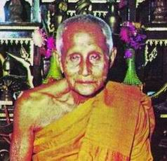

|
คำปรารภของ
พระครูดิตถารามคณาศัย (ชม คุณาราโม) ผู้ก่อตั้งมูลนิธิฯ ************ |
|
 ข้าพเจ้าในฐานะเจ้าอาวาสวัดท่าไทร ได้มีความปรารถนาเป็นอย่างยิ่งที่จะให้มีการจัดตั้งมูลนิธิขึ้น เพื่อจะได้นำดอกผลออกมาใช้จ่ายในการบูรณะปฏิสังขรณ์ และก่อสร้างถาวรวัตถุตลอดถึงอุปถัมภ์บำรุงพระภิกษุสามเณรภายในวัดท่าไทร เพราะถาวรวัตถุที่ได้สร้างไว้ย่อมชำรุดทรุดโทรมไปตามกาลเวลา ทั้งที่จะต้องสร้างขึ้นใหม่ก็ย่อม มีตามกาลสมัย ผู้ที่บรรพชาอุปสมบทอยู่ประจำที่วัดท่าไทรก็มีเป็นจำนวนมาก จึงเป็นเหตุให้ต้องใช้จ่ายเงินมากขึ้นตามลำดับ โดยเฉพาะที่มีความจำเป็นอย่างยิ่ง ก็คือ การอุปถัมภ์บำรุงพระภิกษุสามเณร ข้าพเจ้าได้พยายามรวบรวมเงินไว้ ตั้งแต่ปี พ.ศ. ๒๔๘๗ ถึง พ.ศ. ๒๕๑๙ ได้จำนวน ๑๐๐,๐๐๐.๐๐ บาท (หนึ่งแสน บาทถ้วน) ซึ่งครบตามจำนวนเงินที่กฎหมายกำหนดไว้เป็นอย่างต่ำในการขอจดทะเบียนจัดตั้งมูลนิธิ เงินจำนวนดังกล่าวได้ฝากไว้ที่ "ธนาคารกรุงเทพ จำกัด สาขาบ้านดอน กรรมการ ๗ ท่านที่ปรากฏชื่อในบัญชีรายชื่อกรรมการ "สิญจน์อุทิศดิตถารามมูลนิธิ" ได้รับมอบหมายจากข้าพเจ้าให้เป็นผู้ดำเนินการมาตั้งแต่ต้นจนสำเร็จตามความประสงค์ กล่าวคือ ได้ออนุญาตจัดตั้งมูลนิธิ เมื่อ พ.ศ. ๒๕๑๙ และได้รับอนุญาตจัดตั้งมูลนิธิจากทางราชการเมื่อวันที่ ๙ สิงหาคม ๒๕๒๒
ความปรารถนาที่จะตั้งมูลนิธิของข้าพเจ้าสำเร็จตามปณิธาน
ด้วยความร่วมมือจากกรรมการทุกท่าน โดยเฉพาะ จ่าสิบเอกประสิทธิ์ โกละกะ
ผู้ช่วยสัสดีอำเภอกาญจนดิษฐ์ จังหวัดสุราษฎร์ธานี เป็นผู้ทำหน้าที่ประสานงาน,
พิมพ์เอกสาร และตราสาร จึงขอขอบคุณกรรมการทุกท่านไว้ ณ โอกาสนี้ด้วย
พระครูดิตถารามคณาศัย
(ชม คุณาราโม)
|
|
|
| กลับไปหน้า
Web วัดท่าไทร ไป Web สำนักงานเจ้าคณะภาค ๑๖ ไป Web ศูนย์ฝึกอบรมคอมพิวเตอร์วัดท่าไทร ไป Web ศูนย์พัฒนาคุณธรรมภาคใต้ ไป Web วิทยุชุมชนตำบลท่าทองใหม่ ไป Web ชมรมวีอาร์ร้อยเกาะสุราษฎร์ธานี |